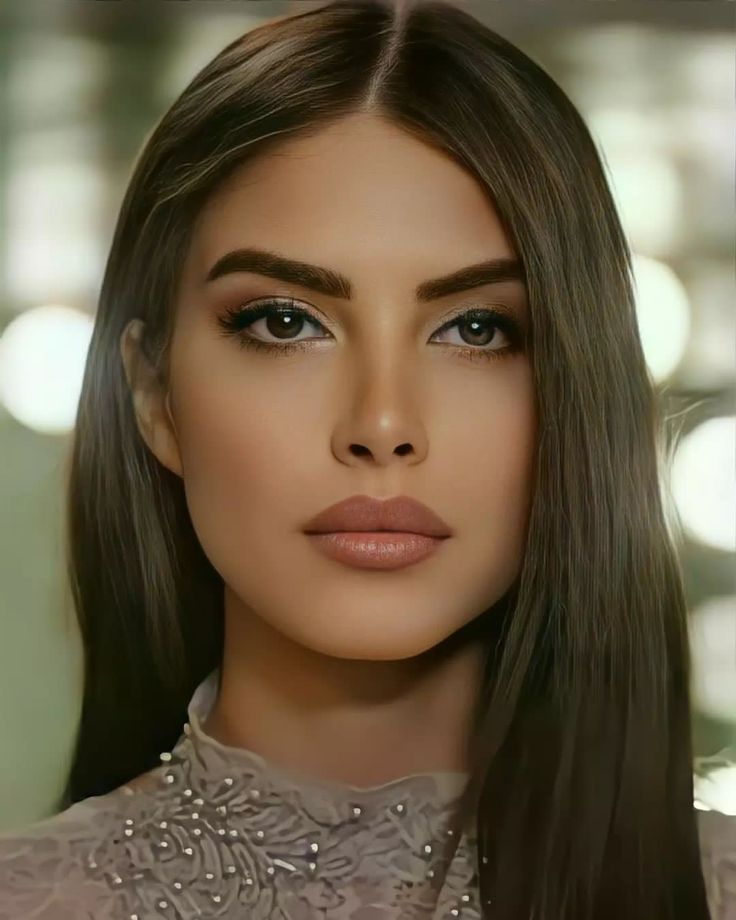

MAKEUP
Cosmetics designed to enhance one's appearance (makeup) can be used to conceal blemishes, enhance one's natural features (such as the eyebrows and eyelashes), add color to a person's face, and—in the case of more extreme forms of makeup used for performances, fashion shows, and people in costume—can be used to change Quality is not at any time cheap, and that is a known fact. For most, if not all ladies, makeup has become a crucial part of their daily routine. Makeup increase ladies self-confidence and self-esteem and of course gives them an appealing and fresh look that lasts the whole day. However, just like clothes, perfumes or any other type of product on the market, one can go for low quality makeup of invest in high quality ones. Take a second to think about how diamonds are sold. The diamond is a single stone, but there are many different grades and the more your diamond costs, the more it will shine. Makeup products work the same way; there may be tons of lotions formulated with Shea butte ...
Makeup categories
- 1. Eyes makeup
- 2. Face makeup
- 3. Nails Art
- 4. Lips Makeup

Eyes makeup tutorial
Eye makeup is a type of cosmetics which aims to make the eyes look noticeable and attractive. It is mostly used by females,
and by stage performers of all types. Eye makeup is an important part of the fashion and cosmetic industries.

Face makeup tutorial
Applying Makeup to a Round Face
Use foundation to shade the areas you would like to reshape or define, such as your chin, nose, forehead and cheekbones.
For instance, you might use the darker contour color under your cheekbones to give your face structure,
especially if you feel like your cheeks are really round.


Types of nail art Nail art is a technique involving the decoration of nails with paint, polish, or other materials. It is used to create designs ranging from simple to elaborate

Lips Makeup Tutorial
Lip makeup is a huge category full of gorgeous goodies, including lip kits, liquid lipsticks and lip liners.
These products help transform your look for drab to fab in an instant. But with so many different options to look through,
it can be hard to find the perfect lip formula for you.
Types of Makeup
- 1. Bridal makeup
- 2. Nude makeup 
- 3. HD makeup
- 4. Matte makeup
Bridal makeup is a special type of makeup that is applied to a bride on her wedding day. It aims to enhance the bride's natural beauty and create a look that is both timeless and elegant. Bridal makeup typically focuses on creating a flawless complexion, accentuating the eyes, and enhancing the lips.
While a bold rep lip and a strong highlight remain cult favourites, you might not be a stranger to the nude makeup look.
From IG models to celebs, the nude makeup or the no-makeup makeup look is all over the internet today wherein the focus
is to have a look that is as close to your natural skin as possible. It’s your skin, only better. The idea is to use sheer cover
products, and make the skin look like it is glowing from within. To create one for yourself, use a hydrating serum, preferably
a hyaluronic acid serum, that gives the skin kick of moisture! Then go with a lightweight moisturizer and primer, and opt for
a dewy foundation or a BB cream. Lastly, take the minimalist road for the eye makeup and blush, and sport a lip gloss.
There you have it, nude makeup look, that is perfect for everyday wear, as well as special events!

HD makeup is like wearing an Instagram filter in real life, where you have no dark circles, no large pores, no uneven tone, and
only flawless skin. Although this makeup is full-coverage and bounces light, it is feather-light and does not look overdone.
Most importantly, you do not see the makeup settling into creases and fine lines. How? HD foundations and powders have
special pigments that blur the light when it reflects. This gives the face a gorgeous sheen that reflects light the way the
natural skin does. Among the many types of makeup, this one especially is worn by TV actors.

A messiah for those with oily skin, or for people who live in humid weather, let us introduce matte makeup to you. A type of makeup
that gives the runway models their natural-looking, porcelain finish, you can bet that matte makeup is a makeup artists’
best-kept secret. It is perfect for those who are desperately looking for a shine-free makeup look. So, if you’re looking
out for makeup that stays put, does not budge, and gives a seamless finish, then you have got to try matte makeup!